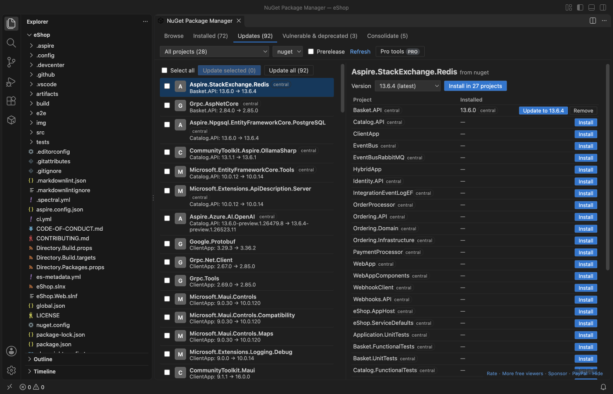

NuGet Package Manager & NuGet Gallery
NuGet Package Manager & NuGet Gallery: Manage NuGet Packages, Updates, Vulnerabilities, a VS Code extension by Zovo
Browse nuget.org, then install, update and remove NuGet packages in your .csproj, .fsproj and .vbproj files. Central package management (Directory.Packages.props), outdated and vulnerable packages across the whole solution, and private feeds from nuget.config. Free, no sign-in, no telemetry.
Free, MIT license. Needs VS Code 1.90.0 or newer. Extension ID zovo.zovo-nuget-package-manager, version 0.1.3.
Network: the extension talks only to nuget.org (api.nuget.org and its search servers) and to the feeds in your nuget.config files, and only after you open the manager. Opening a folder sends nothing.

Not made by or affiliated with Microsoft, the .NET Foundation or NuGet. NuGet is a trademark of its owner.
Questions people ask
Is NuGet Package Manager & NuGet Gallery free?
Yes. NuGet Package Manager & NuGet Gallery is free and MIT licensed.
How do I install NuGet Package Manager & NuGet Gallery?
Click "Install in VS Code" above, or search for zovo.zovo-nuget-package-manager in the Extensions view.
What it does
- Projects: it finds every
.csproj,.fsprojand.vbprojin all folders of the workspace, and the projects of each.slnand.slnx. It readsPackageReference,Directory.Packages.props,Directory.Build.props(and the props files they import),VersionOverride,GlobalPackageReferenceand versions set through a property such as$(EFCoreVersion). - Browse: search nuget.org or any v3 feed, with a prerelease switch. Details show versions, downloads, licence, project URL, dependencies per target framework, and the package README.
- Install, update and remove: the extension edits the project XML in place. Formatting, comments, attribute order, the byte order mark and line endings stay as they were. With central package management the version goes to
Directory.Packages.props. A version set through a property is changed where the property is defined. - Restore: after each change it runs
dotnet restorewhen the .NET SDK is installed, with the output in the NuGet output channel. Without the SDK the change is saved and the message says restore was skipped. - Updates: the Updates tab lists every outdated package across the solution. Tick some or update all. Version ranges such as
[8.0,9.0)stay inside the range, and prereleases appear only when you switch them on (or already use one). - Vulnerable and deprecated: flags from the nuget.org vulnerability data (the same source
dotnet list package --vulnerableuses) and from the deprecation data of each version, with severity and the advisory link. - Consolidate: the tab shows packages that are used in more than one version across the projects.
- Private feeds: sources come from every
nuget.configthat applies (the folder, its parents and your user file), including<clear />and disabled sources. Azure Artifacts, GitHub Packages and other v3 feeds work with a user name and a personal access token you paste once; it is kept in VS Code's secret storage. AClearTextPasswordinnuget.config(also%ENV_VAR%) is used as is. A 401 shows which feed needs a token. packages.configprojects are listed with a clear message: they are not edited here. Migrate them toPackageReferencefirst.
Open it from the NuGet icon in the activity bar, the Manage NuGet Packages button on a project file, or the Command Palette command NuGet: Open NuGet Package Manager.
Why this one
Measured against what users of the other NuGet extensions asked for (links go to the public issue or review):
| What users asked for | Here |
|---|---|
| Central package management: pcislo/vscode-nuget-gallery issue 169 (open since 2 Jan 2026), aliasadidev/vscode-npm-gui issue 81 and issue 42 (open) | Reads and writes Directory.Packages.props, VersionOverride and GlobalPackageReference. Tested on eShop, Clean Architecture, MediatR, Polly, AutoMapper and Pomelo. |
| Projects outside the first folder: jmrog/vscode-nuget-package-manager issue 35 (open since 2018), and Marketplace reviews of 2 Dec 2021 and 26 Dec 2019 | Every workspace folder and every sub-folder is searched; bin, obj and node_modules are skipped. |
nuget.config and private feeds: pcislo/vscode-nuget-gallery issue 24, jmrog issue 23, aliasadidev issue 47 | All nuget.config levels, <clear />, disabled sources, tokens in secret storage, a clear message on 401. |
| Updates that break the project file or need many clicks | Edits change only the version text; the tests check this on 618 references in 150 real project files. One click updates every outdated package of the solution. |
It also works without the .NET SDK for browsing, editing and the outdated view. The same extension is published to Open VSX for Cursor, Windsurf and VSCodium.
Free and Zovo Pro
Everything above is free and stays free. Two tools for teams are Zovo Pro (USD 19 once, for every Zovo extension). Each can be used 3 times for free first:
- Licence report: the licence of every package of the solution, saved as CSV, for a licence review or a customer.
- Migrate to central package management: moves every version of the solution into one
Directory.Packages.propsin one step, with a diff of every file before anything is written.
Nothing about Pro shows when you open a project. Set zovoNuget.showProFeatures to false to hide the two tools.
Settings
| Setting | Default | |
|---|---|---|
zovoNuget.includePrerelease | false | Show prerelease versions in search, details and updates |
zovoNuget.restoreAfterChange | true | Run dotnet restore after a change, when the SDK is installed |
zovoNuget.dotnetPath | empty | Full path of dotnet (empty: PATH and ~/.dotnet) |
zovoNuget.showProFeatures | true | Show the two Zovo Pro tools |
zovoNuget.askForRating | true | Ask once, after a few good uses, for a rating |
zovoNuget.showSupportLinks | true | The small support line at the bottom of the manager |
Privacy
No account, no telemetry, no analytics. Requests go to nuget.org and to the feeds in your nuget.config, only after you open the manager. Tokens stay in VS Code's secret storage and are sent only to the feed they belong to. The vulnerability list from nuget.org is cached in the extension's storage folder.
Install NuGet Package Manager & NuGet Gallery
Click the button to open VS Code and install it, or press Ctrl+P (Cmd+P on macOS) in VS Code and run ext install zovo.zovo-nuget-package-manager.
Free, MIT license. Needs VS Code 1.90.0 or newer. Extension ID zovo.zovo-nuget-package-manager, version 0.1.3.
Source code and issues are on GitHub.
Zovo Pro and support
Zovo Pro: USD 19 once, every Zovo viewer. It turns on the Pro tools in this extension and in the other Zovo extensions you use. The free features stay free.
After a card payment your license key shows on the next page. Paste it with the command "Zovo Pro: Enter a key".
You can also support the work with no Pro:
Need your format supported?
Open a format request with a sample file, and I reply there whether it can be done. For USD 299 once, through this GitHub Sponsors tier, I add your file format or a missing feature to this extension, with tests, within 7 days.